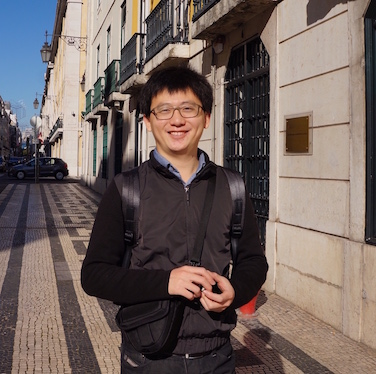

Dr. Zan Li 李赞
Associate Professor 副教授
- zanli at jlu.edu.cn
- +86 1333 154 6926
Career Summary
2021年起招收硕士研究生，请希望对无线通信、智能感知、频谱感知方向感兴趣的同学联系我！我们将一起合作进行国际前沿的科学研究，我们将提供弹性工作时间、国际交流和公司实习机会！
就职于吉林大学通信工程学院（副教授），北京波尔通信算法专家（兼）吉林大学优秀青年教师（重点资助）。曾任阿里巴巴资深算法工程师负责传感器融合定位。2016年在瑞士伯尔尼大学获得博士学位（summa cum laude，最高荣誉毕业生），当年唯一获得Fritz-Kutter Award博士毕业生（瑞士计算机博士最佳论文）。
I am working at Jilin University as an associate professor. Before that, I was employed at Alibaba Group as a senior algorithm engineer after getting my PhD title (summa cum laude) in University of Bern. I was the only winner of the Fritz-Kutter award (the best PhD thesis in Swiss universities) in 2016.
Research Interests
I have great interests in emerging wireless communication and sensing technologies. I am working on designing advancing algorithms and implementing them in prototyping systems. Please contact me if you are interested in the following topics: Positioning Techniques, Wireless Communications, Wireless Sensing, and Software Defined Radio.
Research Experience
-
Associate ProfessorJilin UniversitySeptember 2019 - Present
-
System Architect (Part-Time)Boer CommunicationsApril 2020 - Present
-
Assistant ProfessorJilin UniversityJune 2017 - September 2019
-
Senior Algorithm EngineerAlibaba GroupJuly 2016 - May 2017
Education Experience
-
Ph.D. in Computer Science (summa cum laude, Fritz-Kutter Award)University of Bern, SwitzerlandApril 2012 - April 2016
-
M.Sc. in Communication and Information TechnologyBremen University, GermanyApril 2009 - December 2011
-
B.Sc. in Electronics and Information EngineeringShandong University, ChinaSeptember 2005 - June 2009
Academic Projects
-
Automatic Modulation Scheme Recognition（5G网络环境下的多信息融合群智感知定位技术研究）吉林省科技厅（学科布局项目），项目负责人Januray 2020 - December 2022
-
Crowdsourcing positioning based on multi-sensor fusion in 5G networks（5G网络环境下的多信息融合群智感知定位技术研究）吉林省科技厅（学科布局项目），项目负责人Januray 2020 - December 2022
-
Crowdsensing Indoor Positioning based on Trace Merging with Multi-landmark and Deep Reinforcement Learning（基于多类地标和深度强化学习轨迹融合的群智感知室内定位算法研究）国家自然基金委（青年项目），项目负责人Januray 2019 - December 2021
-
Indoor Positioning in a Smart Hospital（基于智能手机的智能导诊定位平台开发）企业横向合作课题，项目负责人2019 - 2020
-
吉林大学优秀青年教师重点资助项目吉林大学，项目负责人2020 - 2022
-
吉林大学海外人才引进启动项目吉林大学，项目负责人2017 - 2019
-
Multi-Sensor Fusion based Crowdsourcing Positioning（多传感器融合的众包定位）阿里巴巴集团July 2016 - May 2017
-
OFDM Communication System based on Software Defined Radio(基于软件无线电技术的OFDM传输平台开发）企业合作横向课题， 项目负责人2015 - 2016
-
SwissSenseSynergy (Sensor Fusion based Indoor Positioning)(传感器融合定位）Swiss National Fundation (瑞士国家基金)， 参与Januray 2015 - April 2016
-
In3DGuide (Passive Positioning based SDR)(基于软件无线电的被动定位）FP7 Eurostar (欧洲第七框架Eurostar项目)， 参与April 2012 - November 2013
Selected publications
-
SoiCP: A Seamless Outdoor-Indoor Crowdsensing Positioning System, Zan Li (Corresponding Author), X. Zhao, F. Hu, Z. Zhao, T. Braun, J. Carrera, IEEE Internet of Things 2019
-
Crowdsourcing Indoor Positioning by Light-Weight Automatic Fingerprint Updating via Ensemble Learning, J. Yang, X. Zhao, Zan Li (Corresponding Author), IEEE ACCESS 2019
-
A Particle Filter-based Reinforcement Learning Approach for Reliable Wireless Indoor Positioning,J. Carrera, Z. Zhao*, T. Braun, Zan Li , IEEE Journal on selected areas in communications (JSAC) 2019
-
A Comprehensive Study of Smartphone-based Indoor Activity Recognition via XGBoost, W. Zhang, X. Zhao, Zan Li (Corresponding Author), IEEE Access 2019
-
A Narrow-Band Indoor Positioning System by Fusing Time and Received Signal Strength via Ensemble Learning, Zan Li (Corresponding Author), T. Braun, etc., IEEE Access 2018
-
Passively Track WiFi Users with an Enhanced Particle Filter using Power-based Ranging, Zan Li (Corresponding Author), T. Braun, IEEE Transactions on Wireless Communication 2017
-
A Real-time Robust Indoor Tracking System in Smartphones, J. Carrera, Z. Zhao*, T. Braun, Zan Li, Augusto Neto, Elsevier Computer Communications 2017
-
Crowdsensing Indoor Walking Paths with Massive Noisy Crowdsourcing User Traces, Zan Li, X. Zhao, etc,, IEEE Globecom 2018
-
Automatic Construction of Radio Maps by Crowdsourcing PDR Traces for Indoor Positioning, Zan Li, X. Zhao, H. Liang, IEEE ICC 2018
-
Fine-grained Indoor Tracking by Fusing Inertial Sensor and Physical Layer Information in WLANs, Zan Li, D.B. Acuna, etc., IEEE ICC 2016
-
A Passive WiFi Source Localization System based on Fine-grained Power-based Trilateration, Zan Li, T. Braun, D.C. Dimitrova, IEEE WoWMoM 2015
-
A Time-based Passive Source Localization System for Narrow-band Signal, Zan Li, T. Braun, D.C. Dimitrova, IEEE ICC 2015
-
Methodology for GPS Synchronization Evaluation with High Accuracy, Zan Li, T. Braun, D.C. Dimitrova, IEEE VTC 2015 Spring
-
TDOA for Narrow-band Signal with Low Sampling Rate and Imperfect Synchronization, Zan Li, D.C. Dimitrova, T. Braun, IFIP WMNC 2014, (Best Paper Award)
-
Highly accurate evaluation of GPS synchronization for TDOA localization, Zan Li, D.C. Dimitrova, T. Braun, Wireless Day 2013